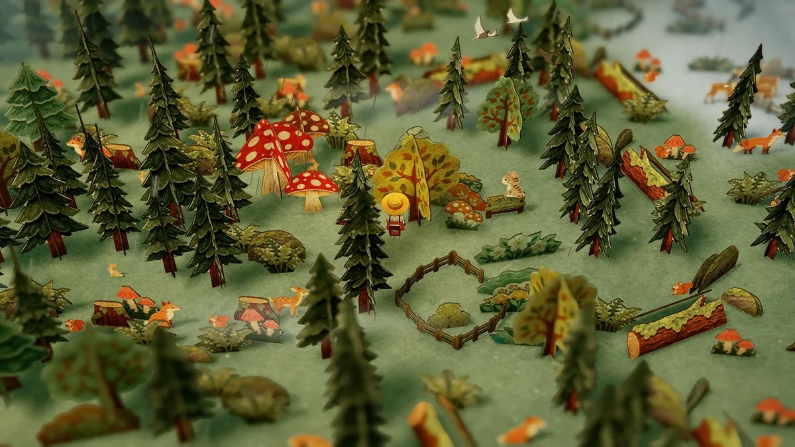
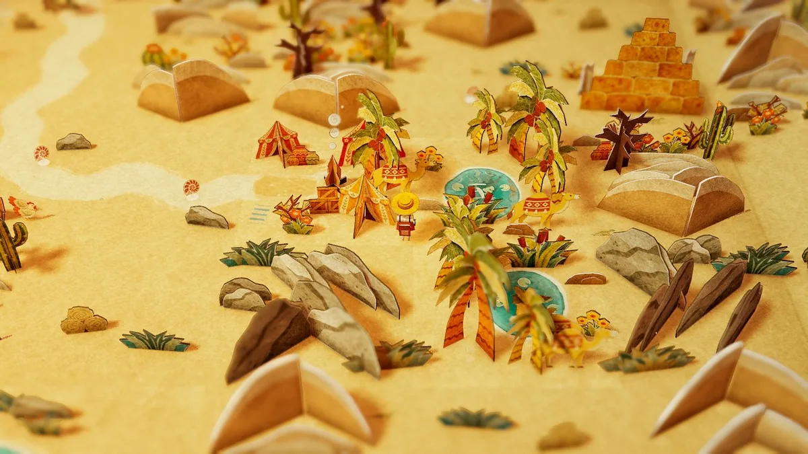
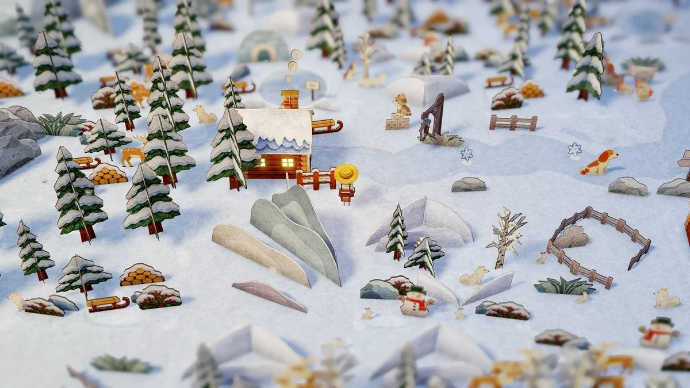
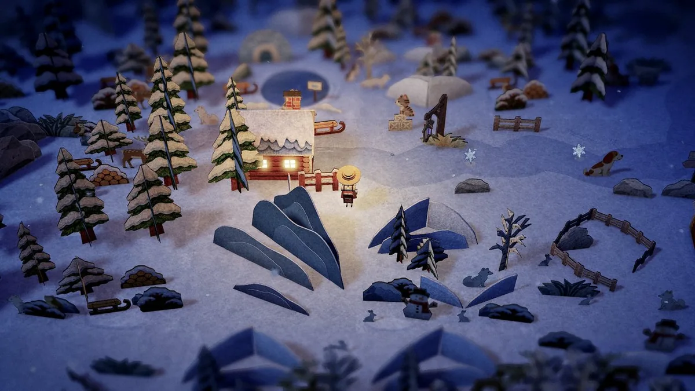
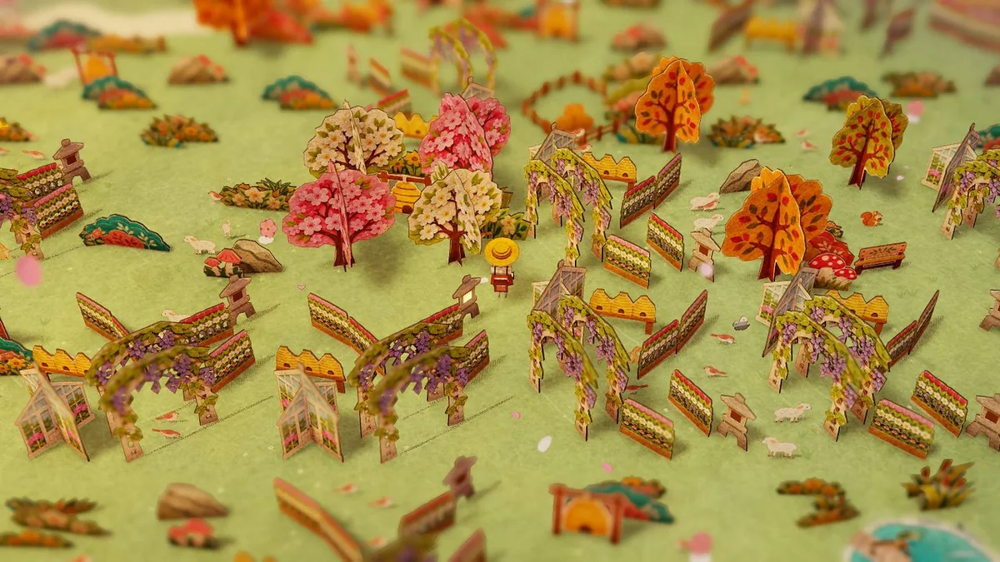
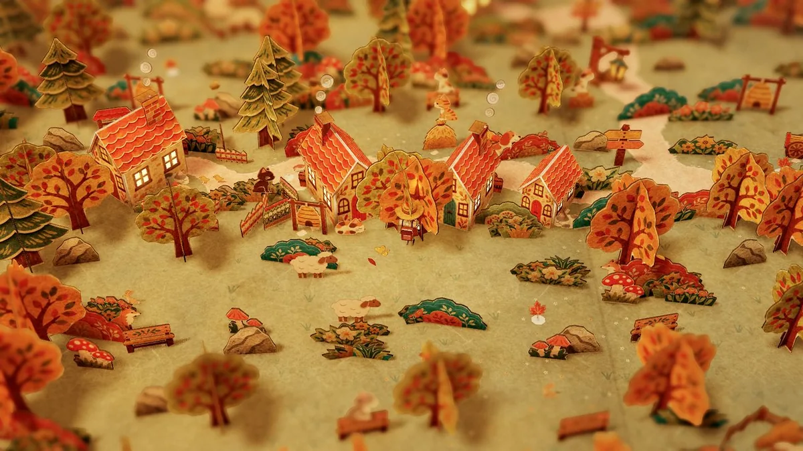

雾气松林里，深绿的纸松交叉立着，几朵巨大的红白蘑菇从苔藓地上撑起来。一只戴草帽的小小纸人站在木栅栏旁，长凳上坐着一只猫。这不是真人照片，而是仓库画廊里的一张静帧：同一套纸的做法，可以长出完全不同的世界。Papercraft 是 Shikhar（@xikhar）公开的一套智能体技能，用来把游戏、可交互场景、网页、动画和视频，做成这种手作的弹出式纸艺风格。仓库以 MIT 发布。本页是项目导读，附录是 README 的全文中译和许可证原文。
skills/papercraft/assets/gallery/，是源游戏五个世界的画面，作者提供。画廊里戴草帽的小人是那款游戏的纸人角色，不是真人照片。
pine-forest.jpg，作者提供，MIT；本页转为 1200×675 WebP）。点击图片可到仓库。这是一套什么技能
公开仓库在 github.com/xikhar/papercraft。GitHub 仓库页给出的描述是：「Agent skill to build games, interactive scenes, web pages and animations in a handcrafted pop-up papercraft style」（一套智能体技能，用来把游戏、可交互场景、网页和动画做成手作的弹出式纸艺风格）。创建时间是 2026-11-21 00:29:56 UTC（新加坡时间 08:29:56）。默认分支是 main。SKILL.md 的前置信息写作者是 xikhar，版本 0.6.0，许可证 MIT；这些是文件里的自报。核对当日（2026-11-24，新加坡时间），仓库页显示 573 个星标、57 个分叉，数字会变 ⚠️。
它要做出的观感很具体：印刷卡纸带着细细的裁切边，从印好的地面上沿铰链折起来；阴影是软的、分层的，并且被这个世界的颜色染过；镜头像一枚自上而下看进模型的移轴微距镜头；动作安静，纸声轻软。提示词和参考决定世界里有什么——色板、地面、建筑、生物、天气——技能决定它们怎么用纸做出来。图像生成器只有在你提出要求时才会用到，而且全部都可以用代码完成。
安装方式是：
npx skills add xikhar/papercraft也可以把 skills/papercraft/ 复制到你所用智能体的 skills 目录。README 写明，它适用于任何支持 Agent Skills 的代理，并列了 Claude Code、Codex、Cursor、Gemini CLI、OpenCode 等。装好之后，直接向它提出纸的需求即可，例如：让面包店首页像一本立体故事书，做一座会从地面折起来的港口小镇，或把一座纸灯塔小镇做成 8 秒的竖屏短片。
它从哪来，和 Papertrails 是什么关系
SKILL.md 开篇写：这里的一切都来自一款已经上线、同一风格的浏览器游戏，数值是在批评轮次和用户反馈里付过代价之后留下来的起点，不是装饰。README 也说，它带上了从一款已发布的 three.js 立体书游戏里得来的、经过检验的数字，以及源游戏五个世界的画廊，每个世界配有当初的提示词。
仓库的 README 和 SKILL.md 都没有写出源游戏的名字 ⚠️。五个世界分别是松林、沙漠绿洲、雪地小村、春日花园和秋天农庄，与同作者稍早公开的浏览器作品 Papertrails 里出现的松林、沙漠、雪地、花树和村子高度重合。本页把它们作为同一作者的前后作品互见，不把仓库未写明的归属写成定论。Papertrails 本身也以 MIT 发布，可以在 xikhar.github.io/papertrails 打开。同作者更早还有水墨风网页游戏 Sumiro，不是同一项目，也不应合并。
技能明确提醒：画廊只用来看质量标准和题材范围，不要把某个世界的颜色、种类或布局搬进另一个题目。戴草帽的小人是那款源游戏的玩家，新项目应自己设计角色。
里面有什么
主体在 skills/papercraft/ 里，大致分成四层：
SKILL.md：材料模型、如何从提示词和参考标定方向、纸规格、路径选择、工作流程和检查项。references/：按需加载的说明书，涵盖画廊、结构类型、外观、色板、机构、运动、世界、程序化印刷、画幅与导出、可选的图像生成、声音、纸质界面、three.js、二维网页、其他引擎，以及过程。assets/lib/：可直接导入的管路。包括paperkit-2d.js（纸张、裁切轮廓、分层印刷、二维甲板）、paperkit-3d.js（带厚度的卡片、铰链、十字家族、扇形对、盒折、任意平面上的棱柱折、平台、PCSS 软阴影、微距镜头）、paper-motion.js（带锁定的纸弹簧、风摆、固定时钟、行走场）、paper-sound.js（程序化纸声、离线渲染）、paper-life.js（天气、飞物、烟、云影，以及带行为的生物）。另有灯光预设lights.json，以及一套田园世界的工作实例，供阅读，不是拿来拼装新题材的零件目录。assets/templates/：固定的架子，外观可以替换。popup-3d用 three.js，popup-2d用 Canvas 2D；三维模板还带一页structures.html，用占位形把每种结构类型摆出来。脚本这边有capture.py（无头渲染静帧和 MP4）、measure.py（外观指标）、ab_sheet.py（盲评对照表）和paper_textures.py。
兼容性写在 SKILL.md 里：模板和工具包在现代浏览器中运行，three.js 通过 CDN 使用 r187；脚本需要 Python 3，以及 numpy 与 Pillow。本地预览时，把 assets/ 用 HTTP 提供出来（例如 npx serve skills/papercraft/assets），打开 /templates/popup-3d/ 或 /templates/popup-2d/ 即可。两套模板都可以用 WASD 或方向键走动主角，加上 ?still 则停在固定总览。自己的项目里，复制 lib/ 和对应的架子（三维是 harness.js，二维是 harness-2d.js），再写自己的 scene.js，并在页面的 import map 里把 "papercraft/" 指到存放 lib/ 的目录。
同一个世界可以画进不同画幅：16:9 影片、9:16 Reel、方形或 4:5 帖子、4K 母版、超宽静帧，或手机页面。镜头按画幅短边来守，竖画幅会靠得更近，并让主体避开平台字幕区。地址栏加上 ?size=1080x1920 或 ?aspect=9:16 就能换一种画幅来看。capture.py 用 Playwright 做无头渲染，并报告构建时间、最慢的印刷、主角的卡片是否互相切入，以及页面错误；例如 --size reel "clip:video=8,30" 会渲染一段竖屏片段并编码成 MP4。
纸为什么会像纸
SKILL.md 把「读起来像纸」写成十二条材料法则，细节和数值放在 references/look.md。下面按原文归纳，不代替原文件。
- 一切都是带厚度的平片。形状只来自裁切、折叠、分层和插槽，不来自雕塑体量。卡纸厚度大约是主角身高的 1.5% 到 3%。立着、需要被走绕的圆形物（树、棕榈、仙人掌、帐篷）用两张印刷平面成直角交叉；低矮的草、灌木和石头则是面向镜头的单层或分层卡片。
- 彻底哑光。只有漫射，没有高光、反光和釉面。擦边处若有光泽，就会读成塑料或水。
- 一盏偏暖的侧向主光，阴影带世界的颜色。主光从侧面来，让影子落在镜头能看见的侧后方；正面辅光大约是主光的四分之一到三分之一，避免面向镜头的卡片发灰。影子在纸片贴地处清晰，随间隙变软，颜色来自地面：白天的暖地是琥珀色，雪地是lilac蓝，水下是深青绿，夜里是海军蓝。不要用灰或黑的影子，也不要给整帧罩一层彩色雾。
- 每一块印刷都是小型的分层纸拼贴。在厚实的轮廓里，用三到五种墨色、至少三个明度阶，再加一种纹样，一层层贴在带轻微纤维的底纸上。先搭结构，再放与底色对比的纹样。每一层都要在下层投下很短的软阴影，受光边缘露出一线浅色唇边。这组细节才让人看出是叠起来的纸，而不是矢量填充。
- 裁切边是细细的深褐线，只在受光一侧加浅色高光。不要在轮廓外加一圈均匀的浅边（那会像贴纸光晕），也不要发光或撕边。折痕不是裁切，铰链根部和板缝不加边。任何卡片都不应被看到薄得像刀刃的侧面。
- 一枚自上而下看进世界的微距镜头。垂直视场大约 24 到 32 度，俯角 40 到 55 度；印好的地面要伸出画面每一条边，视野里不要出现地平线、天空、书边或桌子（除非题目本身就是一本书或页面里的界面）。清晰带大约占画面的 36% 到 45%，其余向上向下逐渐模糊。这些数字针对 16:9，换画幅时镜头仍按短边守。
- 色板来自题目本身，用纸的办法来建。不要把示例场景或画廊里的十六进制色值直接搬过来。技能里特别写到，盲测时有人把示例的屋顶和绿色拷进了空间站。不变的是做法：零件携带主色族，地面更浅、更灰一些；每件有一两个与底色对比的点缀；纸绿要闷，不要电子游戏式的饱和绿；用奶油色代替白，用深墨色代替黑。
- 稠密、厚实、可读。这是一个被零件填满的模型世界，不是空地上摆几件道具。画面里大约 100 到 250 件、约 20 个种类，三到八件不同的东西成组出现，相同道具尽量不超过三件。地面保持平坦，高度来自层层平行的卡片，而不是抬高的地形块。主角是比例尺，在 16:9 画面里约占高度的 6% 到 10%，是一个能从各面认出来的小型纸模型，行走时转向，卡片之间不能互相切入。
- 要走上去、钻进去或从下面经过的东西，必须真正搭出来，不能用立着的平面代替。立着的卡片只用于从正面观看、从旁边绕过的东西。可行走的高度是开放的构造：柱上的甲板、带面板的坡道、踩在斜梁上的薄踏步。走进去的空间用带开口的盒折；地面、水面和区域印在书页上。行走逻辑读的是同一套构造。
- 纸只绕折痕转动。升起时要快，并有 8% 到 15% 的过冲，再轻轻颤两三下，大约一秒内停稳；落下更软，着地时轻轻一拍。零件错开 0.05 到 0.1 秒。不要靠缩放、拉伸或淡入来出场。持续的摆动和行走起伏都要克制。
- 声音如果要有，就低、闷、少。每一下动作一声基于噪声的拍打，间隔至少约半秒。
- 世界是活的，活法跟题目走。从环境和时段里选三到五种生命：天气、飞物、烟、云影，以及会吃草、啄食、受惊跳开、漂浮或停栖的生物。它们都是纸做的，又小又慢，主角站着不动时也在动。
建议怎么做
动手前要先写一份「纸规格」，把题目、参考各自负责的事、色板、地面、结构类型、主角、生命、镜头、光、声音、以及要交付的画幅和检查帧都写成带数字的一行。写完后再问自己：这份规格是不是换个相近题目也可以原样使用？如果是，就把色板、纹样和轮廓再推向这个题材自己的世界。
路径按交付来选。三维场景或游戏从 popup-3d 起步，保留 harness.js，替换 scene.js。二维场景、插图或横版卷轴走 popup-2d。网页、应用界面、HUD 和菜单则读 paper-ui.md 与二维网页说明。视频先看运动和画幅说明，再用二维或三维路径，最后用 capture.py 按固定时钟导出。若要迁到 Godot、Unity、Unreal 或 Blender，技能指向 engines.md，并注明这些是移植笔记，未经测试。
工作流程被写成八步：先读提示词和参考、对照画廊里一个相近世界和一个远离的世界，再填写纸规格；在最终的光和镜头下，先用一张测试卡片把材料做对；然后设计 15 到 25 种零件，先做主角要走上去的构造；再加铰链和弹簧，升起顺序按折叠时的叠放来；声音可选，而且要比自己以为的更少；捕捉必须可复现，随机选择要有种子，运动由固定步长的时钟驱动，审查帧用 restart(); step(T)，不要从自由播放的循环里截一张；用 measure.py 做门禁而不是证据，再和目标做盲评，一轮只改最严重的三件事，最多三个来回。最后要如实报告，哪些用帧验证过，哪些没有。
还有一份「假纸特征」禁单，放在 look.md 第 12 节，例如发黏的毡面纸、该用硬卡纸时却用了毛边纸、发亮的三维渲染、桌上的一张纸、平的矢量画，以及每件东西都套一圈浅色贴纸边。技能要求在第一轮审查前读一遍，交稿前再读一遍。





许可
根目录 LICENSE 为 MIT License，Copyright (c) 2026 Shikhar。GitHub 仓库页标注的 SPDX 标识也是 MIT。README 末尾同样写 MIT。three.js 是独立依赖，经 CDN 引入 r187，许可需单独看待。画廊静帧来自仓库自身，随本仓库的 MIT 许可提供。若你另外提供了真实立体书照片、情绪板或第三方参考，那些材料各属其权利人，不能由本仓库的许可证外推。
相关阅读
附录：README 全文中译
以下为仓库根目录 README.md 的中文翻译，依据 2026-11-24 从默认分支 main 核对到的文本。结构与原文件一致。
papercraft
一套智能体技能，用来把游戏、可交互场景、网页、动画和视频，做成同一种手作的弹出式纸艺风格，题材不限：印刷卡纸部件带着细细的裁切边，从印好的地面上沿铰链折起来；柔软、分层、被世界颜色染过的阴影；一枚自上而下看进这个世界的移轴微距镜头；安静的铰链动作，和轻软的纸声。
它把方法教给你，也带上从一款已经上线的 three.js 立体书游戏里得来的、来之不易的数值：怎样让一帧读起来像拍下来的纸模型（哑光纸面；每一块印刷都是带对比点缀的小型分层纸拼贴；细细的深色裁切边，受光一侧有浅色高光；被世界染色的软阴影；由厚实零件组成的稠密世界；移轴微距镜头）；怎样用一组可扩展的结构类型做出任意零件（插槽十字、分层平面、折叠盒与棱柱、穹顶、印刷水面，以及供行走的甲板、桥和楼梯）；纸怎样运动、怎样活着、怎样发声；怎样做一个各卡片互不切入的角色；以及一套测量与批评循环。
你的提示词和参考决定这个世界：它的色板、地面、建筑、生物和天气。参考是标定方向的一种办法：一张纸模型照片可以本身就是外观目标，而照片、草图或情绪板给出主题和设计，再由智能体用纸重建。只有在你要求时才会用到图像生成器，而且全部都可以用代码做出来。源游戏里的五个世界做成了一组画廊，每个世界都配有做出它的那条提示词，用来展示范围和质量标准，而不是拿来照抄内容。智能体会为你的题材自己设计并写出零件；随附的代码是管路（纸、卡片、分层印刷、铰链、光、镜头、行走、生命），外加从一个田园世界里抽出的工作实例。
同一个世界可以画进任意画幅：16:9 影片、9:16 Reel、方形或 4:5 帖子、4K 母版、超宽静帧，或手机页面。镜头按画幅短边来守，竖画幅会靠得更近，并让主体避开平台的字幕区；印刷和模糊会跟分辨率走。capture.py 按标准尺寸渲染静帧和 MP4 片段（--size reel、square、4k 等）。
安装
npx skills add xikhar/papercraft也可以把 skills/papercraft/ 复制到你所用智能体的 skills 目录。适用于任何支持 Agent Skills 的代理（Claude Code、Codex、Cursor、Gemini CLI、OpenCode，等等）。然后直接向它要一些纸的东西：
- 「让我们的面包店落地页摸起来像一本立体故事书」
- 「一个会从地面折起来的港口小镇的小型 three.js 场景」
- 「把一座火星上的穹顶做成纸透视模型，再让一辆探测车弹出来」
- 「一段 20 秒的纸透视模型动画，城市醒来，渲染成 mp4」
- 「潟湖上架着高脚的夜市，颜色跟我附上的照片一样」
- 「按这张情绪板做一个森林神龛；先生成几张概念帧，让我挑一张」
- 「一段 8 秒的竖屏 Reel，一座纸灯塔小镇在黎明醒来」
里面有什么
skills/papercraft/
|-- SKILL.md 材料模型、如何从参考标定方向、纸规格、路径选择、工作流程、检查项
|-- references/ 按需加载：画廊、结构（结构类型）、外观、色板、
| 机构、运动、世界、程序化绘画、画幅（尺寸、安全区、导出）、
| 图像生成（可选参考）、声音、纸质界面、three.js、二维网页、引擎、过程
|-- assets/
| |-- lib/ 管路，按原样导入：
| | paperkit-2d.js（纸张、裁切轮廓、分层印刷、绘图到裁切、二维甲板）
| | paperkit-3d.js（纸材质、带厚度的卡片、铰链、十字家族、
| | 扇形对、盒折、任意平面上的棱柱折、
| | 平台、PCSS 软阴影、微距镜头）
| | paper-motion.js（带锁定的纸弹簧、风摆、固定时钟、行走场）
| | paper-sound.js（程序化纸拟音、离线渲染）
| | paper-life.js（天气、飞物、烟、云影，以及带行为的生物）
| |-- examples/ 供阅读的工作实例，不是拿来拼装的零件：countryside.js（一个世界的零件和
| | 印刷）、built-ground.js（一座桥、斜梁上的楼梯、一道坡、砌石台地、一座
| | 村舍）
| |-- templates/ popup-3d（three.js）、popup-2d（Canvas 2D）：架子，带一个有待替换的示例场景；
| | popup-3d/structures.html：用普通占位形展示每一种结构类型
| |-- gallery/ 源游戏里的五个世界（森林、沙漠、雪地、春天、秋天）：质量标准和
| | 范围，每个世界在 references/gallery.md 里配有它的提示词
| `-- lights.json 按光照条件准备的灯光预设（主光、辅光、阴影色、霾）
`-- scripts/ capture.py（任意画幅尺寸下的无头帧和 MP4 片段、行走、构建报告），
measure.py（外观指标），
ab_sheet.py（盲评对照表），paper_textures.py
模板是固定的架子，外观可以替换：用 HTTP 提供 skills/papercraft/assets/（npx serve skills/papercraft/assets，或 python -m http.server -d skills/papercraft/assets 8000），然后打开 /templates/popup-3d/ 或 /templates/popup-2d/（/templates/popup-3d/structures.html 会展示每一种结构类型）。两套都会用 WASD / 方向键走动主角（加上 ?still 则停在固定总览）。在你自己的项目里，复制 assets/lib/ 和模板的架子（三维用 harness.js，二维用 harness-2d.js），写自己的 scene.js，并在页面的 import map 里把 "papercraft/" 指到存放 lib/ 的目录。加上 ?size=1080x1920（或 ?aspect=9:16）可查看另一种画幅。若要做审查帧，python skills/papercraft/scripts/capture.py <项目文件夹> overview "walk=x,z;x,z" 会用无头方式渲染它们（Playwright），并报告构建时间、最慢的印刷、主角的卡片是否互相切入，以及任何页面错误；--size reel "clip:video=8,30" 会渲染一段竖屏片段并编码成 MP4。
许可证
MIT
附录：LICENSE 原文
MIT License
Copyright (c) 2026 Shikhar
Permission is hereby granted, free of charge, to any person obtaining a copy
of this software and associated documentation files (the "Software"), to deal
in the Software without restriction, including without limitation the rights
to use, copy, modify, merge, publish, distribute, sublicense, and/or sell
copies of the Software, and to permit persons to whom the Software is
furnished to do so, subject to the following conditions:
The above copyright notice and this permission notice shall be included in all
copies or substantial portions of the Software.
THE SOFTWARE IS PROVIDED "AS IS", WITHOUT WARRANTY OF ANY KIND, EXPRESS OR
IMPLIED, INCLUDING BUT NOT LIMITED TO THE WARRANTIES OF MERCHANTABILITY,
FITNESS FOR A PARTICULAR PURPOSE AND NONINFRINGEMENT. IN NO EVENT SHALL THE
AUTHORS OR COPYRIGHT HOLDERS BE LIABLE FOR ANY CLAIM, DAMAGES OR OTHER
LIABILITY, WHETHER IN AN ACTION OF CONTRACT, TORT OR OTHERWISE, ARISING FROM,
OUT OF OR IN CONNECTION WITH THE SOFTWARE OR THE USE OR OTHER DEALINGS IN THE
SOFTWARE.